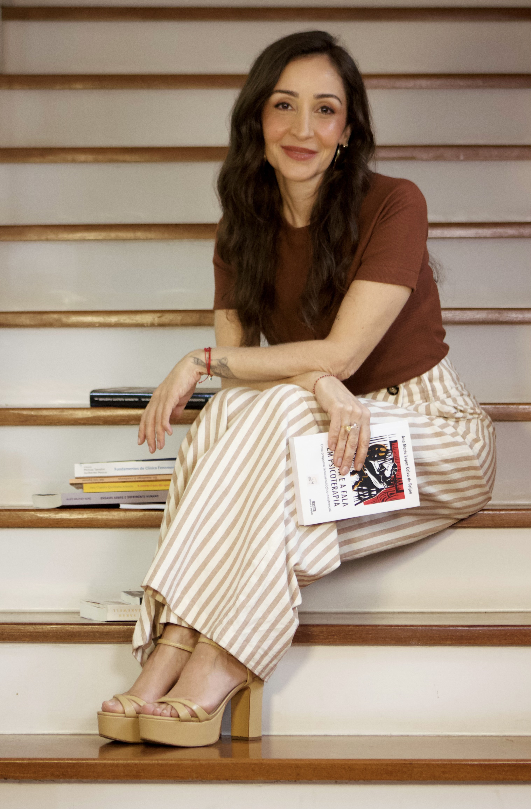
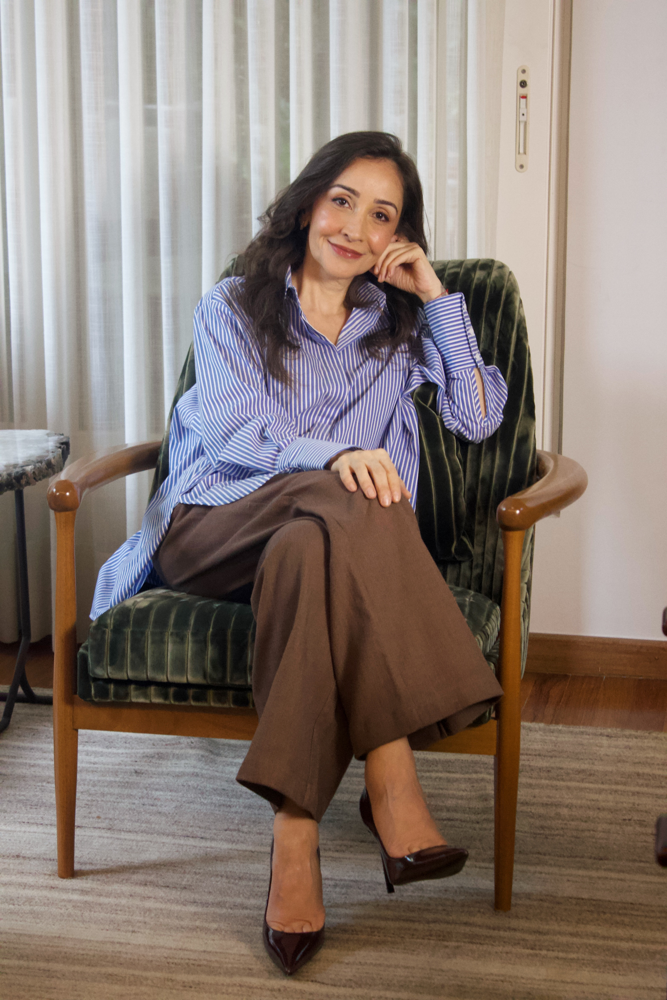

Por fora está tudo em ordem, mas por dentro algo não se encaixa.
Trabalho, família e rotina funcionam, e ainda assim existe uma pergunta que não sai do lugar.

Vanessa Cassarotti. Psicóloga em São Paulo (CRP 06/237547).
Psicoterapia individual presencial e online, com abordagem fenomenológico-existencial.
Agende a sua sessãoSobre mim

Sou psicóloga (CRP 06/237547), com pós-graduação em psicologia fenomenológico-existencial. Atendo adolescentes, adultos e pessoas na maturidade em consultório, em São Paulo, e online.
Antes da psicologia, fui nutricionista, tive um restaurante próprio e passei pelo agronegócio, em uma empresa familiar. Essas experiências me ensinaram a sustentar escolhas e as consequências que vêm com elas, e a conviver com o que vem depois de uma decisão. Em cada mudança de caminho, levei comigo o que já tinha vivido, o que deu certo e o que deu errado, e é com essa bagagem que hoje escuto quem me procura. Ninguém chega totalmente pronto a uma escolha; seguimos em construção, decidindo com o que temos em mãos.
Levo esse percurso ao consultório como repertório. Conheço de perto o cansaço de quem sustenta muita coisa, a dúvida de quem pensa em mudar depois de muito tempo em uma direção e o desconforto de perceber que a vida ficou no piloto automático.
Sou mãe de duas filhas, e a convivência com elas segue sendo uma das minhas melhores escolas sobre vínculo, liberdade e cuidado.
Metodologia

Minha formação é fenomenológico-existencial. Sei que o nome parece complicado, mas o que ele descreve está bem perto da vida cotidiana: entendo cada pessoa como alguém que existe sempre inserido no mundo em que vive, em relação constante consigo mesmo e com os outros. O trabalho começa pelo que você vive e pelo sentido que essa experiência tem para você.
Essa perspectiva leva a sério a liberdade e também o seu peso. Uma parte considerável da angústia nasce das escolhas que fazemos, das que adiamos e das que dizemos não existir. Olhar para isso com calma, sem culpa e sem pressa, costuma abrir possibilidades que estavam encobertas pela frase "eu não tenho escolha".
Ela também entende que ninguém existe isolado. Família, casal, trabalho e amizades formam o campo em que nossos modos de agir se constroem e se repetem, e olhar para esses vínculos ajuda a perceber o que é seu, o que foi herdado e o que pode ser reorganizado.
O sofrimento, nessa visão, carrega informação sobre o que importa para você (relações, escolhas, perdas, liberdade, finitude, sentido) e merece ser escutado com atenção. Quando o caso pede, converso com a pessoa sobre a possibilidade de uma avaliação psiquiátrica e faço o encaminhamento, porque cuidar bem às vezes exige mais de um profissional.
Psicoterapia é uma construção feita a dois: não há prazo definido, e o ritmo é definido pelo que a sua vida pede.
Para quem é
Estes são alguns dos pontos de partida que mais escuto.
Trabalho, família e rotina funcionam, e ainda assim existe uma pergunta que não sai do lugar.
Carreira, relação, mudança de cidade ou de vida. Muitas vezes, a dificuldade está menos em escolher e mais em assumir o que a escolha implica.
Quando o roteiro conhecido acaba (uma separação, uma aposentadoria, filhos que saem de casa, uma carreira que já não faz sentido), abre-se um espaço desconfortável e cheio de possibilidades.
Um cansaço que o descanso não resolve, entre o tédio e a angústia, com a impressão de que a vida está acontecendo ao lado.
Trabalhada sem moralismo e sem a lógica de certo e errado, olhando para o sentido que comer, controlar ou evitar tem na sua história.
Nas relações de família, de casal e de trabalho, os mesmos enredos costumam reaparecer com personagens diferentes.
Luto, separação, diagnóstico de alguém querido, o fim de uma fase. A finitude também faz parte do que se pode conversar aqui.
Se você se descreve como ansioso, esgotado ou sem rumo, esse também é um bom ponto de partida. Você só se entende em conversa, e nenhuma lista dá conta disso.
Primeira consulta
Você me escreve pelo WhatsApp, pode ser uma mensagem curta, e combinamos dia, horário e modalidade para uma conversa inicial.
A primeira sessão é uma conversa sobre o que trouxe você até aqui. Não precisa chegar com o assunto organizado, nem saber nomear o que sente, nem preparar nada. Você fala no ritmo que puder, e ninguém aqui está julgando o que você diz.
No final, conversamos sobre como seria o trabalho (frequência, formato, combinados de horário, faltas e remarcações). A decisão de continuar é sua, e você pode levar o tempo que precisar para pensar; se quiser seguir comigo, combinamos os próximos encontros, e se preferir não seguir, tudo bem também.
Contato

Atendimento presencial em São Paulo e online
Como trabalho
Atendo em sessões individuais de 50 minutos, presencialmente em São Paulo, ou online, por videochamada, de onde você estiver. O ponto de partida costuma ser um encontro por semana, e a frequência é combinada entre nós e revista ao longo do processo.
No atendimento online, o formato, a duração e o sigilo são os mesmos do presencial. Você só precisa de um lugar reservado, uma conexão estável e fones de ouvido, se possível.
Tudo o que é conversado nas sessões é sigiloso, conforme o Código de Ética Profissional do Psicólogo.
Valores e horários disponíveis são tratados já no primeiro contato, com calma e sem compromisso, e qualquer dúvida pode ser retomada na primeira sessão.